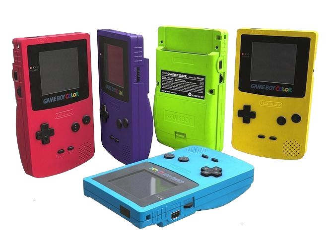

GameBoy Color
R$150
O Game Boy Color é um console portátil de 8-bits, desenvolvido pela Nintendo
e lançado em 21 de outubro de 1998 no Japão e em novembro em outros mercados.
É o sucessor do Game Boy. O portátil possui uma tela colorida em vez de monocromática,
mas não é retroiluminada.